features.7 unit 45: zigzagged (texture, 0.231805); atrium-public-s (scene, 0.012451); keyboard (object, 0.008577); white-c (color, 0.007841); metal (material, 0.007032); blade (part, 0.003227)
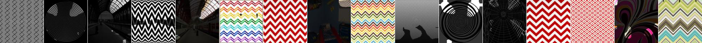
features.7 unit 246: banded (texture, 0.220898); skyscraper (object, 0.028054); skyscraper-s (scene, 0.015513); door frame (part, 0.008006); pink-c (color, 0.007179); painted (material, 0.005781)
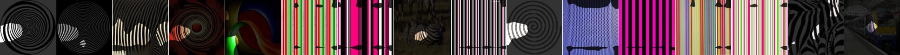
features.7 unit 290: chequered (texture, 0.165845); ball_pit-s (scene, 0.007359); red-c (color, 0.004134); food (material, 0.003302); person (object, 0.003250); arm (part, 0.003241)
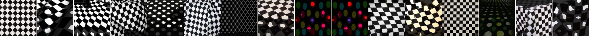
features.7 unit 308: dotted (texture, 0.159353); ball_pit-s (scene, 0.035762); ball (object, 0.019425); arm (part, 0.012316); pink-c (color, 0.009477); skin (material, 0.006209)
features.7 unit 183: grid (texture, 0.149203); jail_cell-s (scene, 0.030646); pane (part, 0.020469); windowpane (object, 0.014809); white-c (color, 0.009816); glass (material, 0.007415)
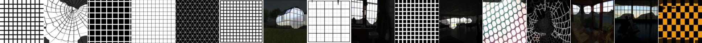
features.7 unit 227: chequered (texture, 0.139664); white-c (color, 0.007539); tile (material, 0.003722); supermarket-s (scene, 0.003665); sky (object, 0.003643); hair (part, 0.002249)
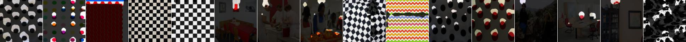
features.7 unit 141: chequered (texture, 0.136710); skyscraper-s (scene, 0.008001); white-c (color, 0.007941); windowpane (object, 0.007727); glass (material, 0.005119); screen (part, 0.004150)
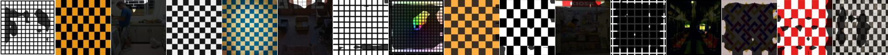
features.7 unit 179: perforated (texture, 0.124355); sheep (object, 0.019662); hut-s (scene, 0.010532); torso (part, 0.009169); grey-c (color, 0.005068); food (material, 0.005049)
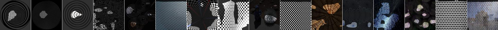
features.7 unit 129: zigzagged (texture, 0.118430); white-c (color, 0.006917); painting (object, 0.005104); archive-s (scene, 0.004990); headboard (part, 0.004438); glass (material, 0.003273)
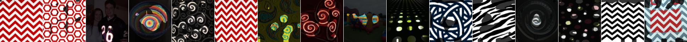
features.7 unit 104: dotted (texture, 0.117559); mountain_snowy-s (scene, 0.010597); purple-c (color, 0.009827); mountain (object, 0.005580); wheel (part, 0.004286); carpet (material, 0.002526)
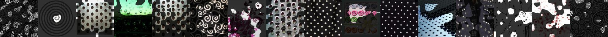
features.7 unit 162: dotted (texture, 0.117263); kindergarden_classroom-s (scene, 0.018124); painting (object, 0.009136); body (part, 0.007409); white-c (color, 0.007181); paper (material, 0.006768)
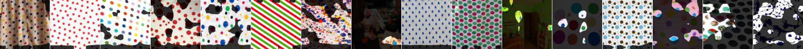
features.7 unit 217: perforated (texture, 0.117184); desert-sand-s (scene, 0.011772); cat (object, 0.010864); head (part, 0.010801); white-c (color, 0.006429); food (material, 0.004461)
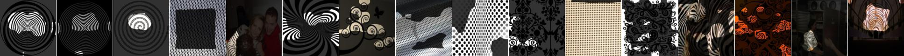
features.7 unit 218: chequered (texture, 0.115313); arm (part, 0.006584); black-c (color, 0.005372); person (object, 0.005261); ball_pit-s (scene, 0.005068); fabric (material, 0.004262)
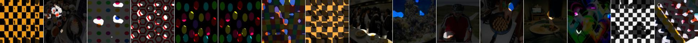
features.7 unit 126: dotted (texture, 0.112573); ball_pit-s (scene, 0.048018); ball (object, 0.026785); food (material, 0.016917); head (part, 0.010397); pink-c (color, 0.009646)
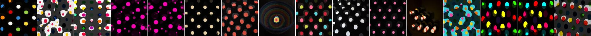
features.7 unit 240: perforated (texture, 0.110406); muzzle (part, 0.022260); dog (object, 0.017631); white-c (color, 0.005415); auto_showroom-s (scene, 0.003591); food (material, 0.002824)
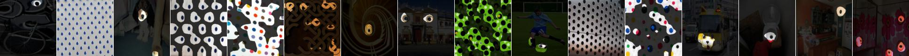
features.7 unit 259: cobwebbed (texture, 0.110054); bicycle (object, 0.019123); wheel (part, 0.018046); bow_window-outdoor-s (scene, 0.009625); green-c (color, 0.007635); metal (material, 0.005413)
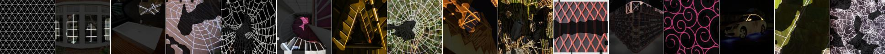
features.7 unit 144: dotted (texture, 0.107826); wheel (part, 0.036762); painting (object, 0.017201); laundromat-s (scene, 0.008218); glass (material, 0.006832); pink-c (color, 0.006165)
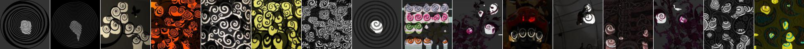
features.7 unit 257: studded (texture, 0.106760); light (object, 0.013318); anechoic_chamber-s (scene, 0.012961); black-c (color, 0.006758); crosswalk (part, 0.005221); glass (material, 0.002239)
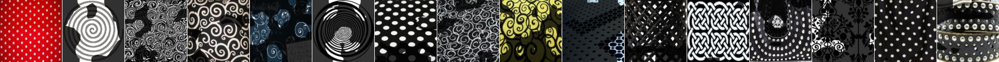
features.7 unit 63: banded (texture, 0.106250); skyscraper (object, 0.025598); skyscraper-s (scene, 0.013123); pink-c (color, 0.007881); crosswalk (part, 0.007419); fabric (material, 0.004111)
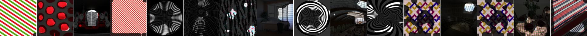
features.7 unit 266: grid (texture, 0.100997); track (object, 0.015331); airport_terminal-s (scene, 0.011872); wheel (part, 0.009796); white-c (color, 0.007442); tile (material, 0.004957)
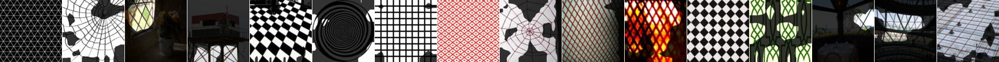
features.7 unit 373: dotted (texture, 0.097246); ball_pit-s (scene, 0.066623); ball (object, 0.039881); red-c (color, 0.007585); food (material, 0.006775); arm (part, 0.003242)

features.7 unit 31: chequered (texture, 0.095869); bus (object, 0.008768); screen (part, 0.006670); glass (material, 0.005321); white-c (color, 0.005256); bow_window-outdoor-s (scene, 0.005026)
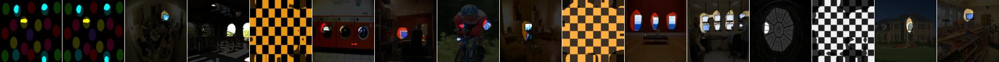
features.7 unit 53: polka-dotted (texture, 0.095354); painting (object, 0.022930); glass (material, 0.011200); screen (part, 0.009260); casino-indoor-s (scene, 0.006189); red-c (color, 0.003886)
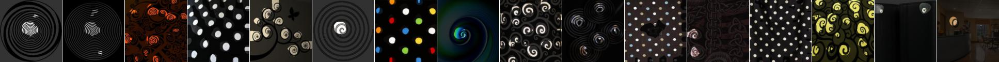
features.7 unit 193: perforated (texture, 0.090489); field-cultivated-s (scene, 0.023120); field (object, 0.013771); roof (part, 0.007411); green-c (color, 0.005459); carpet (material, 0.002457)
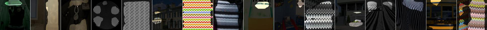
features.7 unit 233: polka-dotted (texture, 0.089963); tree (object, 0.024158); forest-broadleaf-s (scene, 0.021312); food (material, 0.009289); green-c (color, 0.006177); body (part, 0.001917)
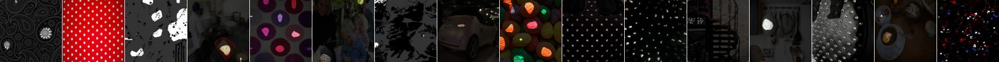
features.7 unit 112: chequered (texture, 0.089262); ball_pit-s (scene, 0.038370); ball (object, 0.018499); leg (part, 0.007098); red-c (color, 0.006255); fabric (material, 0.003611)

features.7 unit 302: lacelike (texture, 0.083511); art_school-s (scene, 0.033484); white-c (color, 0.012162); head (part, 0.010114); motorbike (object, 0.009662); wallpaper (material, 0.002693)
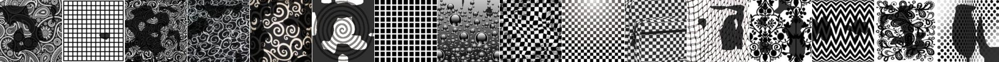
features.7 unit 119: chequered (texture, 0.083029); pool table (object, 0.007489); red-c (color, 0.005938); screen (part, 0.005685); day_care_center-s (scene, 0.005521); painted (material, 0.002366)
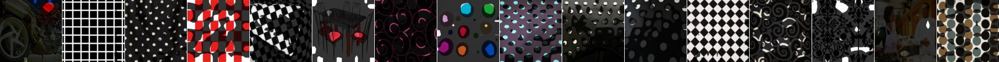
features.7 unit 309: cobwebbed (texture, 0.082836); forest-broadleaf-s (scene, 0.017673); tree (object, 0.013449); green-c (color, 0.011215); metal (material, 0.005314); torso (part, 0.002797)
features.7 unit 256: head (part, 0.080654); freckled (texture, 0.046823); person (object, 0.042733); pink-c (color, 0.020291); skin (material, 0.009345); ball_pit-s (scene, 0.007762)
features.7 unit 72: chequered (texture, 0.080214); screen (part, 0.010014); glass (material, 0.007580); computer (object, 0.007353); bow_window-outdoor-s (scene, 0.004980); white-c (color, 0.004871)

features.7 unit 60: striped (texture, 0.078453); crosswalk (part, 0.019238); stairway (object, 0.011067); flight_of_stairs-urban-s (scene, 0.006374); black-c (color, 0.005374); metal (material, 0.003619)
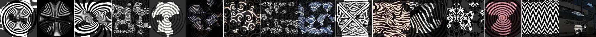
features.7 unit 339: lined (texture, 0.077956); sea (object, 0.021222); coast-s (scene, 0.016673); crosswalk (part, 0.009400); red-c (color, 0.005147); metal (material, 0.003565)
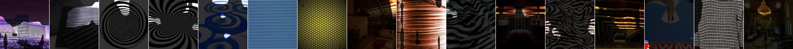
features.7 unit 205: perforated (texture, 0.077860); desert-sand-s (scene, 0.009790); pink-c (color, 0.008061); ground (object, 0.007708); brick (material, 0.002888); roof (part, 0.001271)
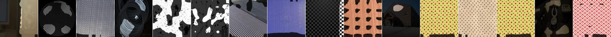
features.7 unit 109: zigzagged (texture, 0.077603); ball_pit-s (scene, 0.019880); wheel (part, 0.019409); motorbike (object, 0.013719); red-c (color, 0.010475); plastic-opaque (material, 0.003830)
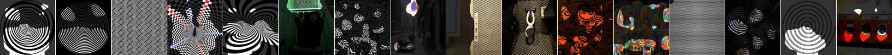
features.7 unit 379: cobwebbed (texture, 0.077100); wheel (part, 0.011921); road (object, 0.008076); red-c (color, 0.005994); conference_center-s (scene, 0.005641); metal (material, 0.003331)
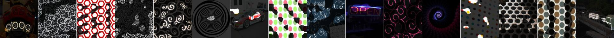
features.7 unit 128: grid (texture, 0.074517); bow_window-outdoor-s (scene, 0.009343); tvmonitor (object, 0.006972); white-c (color, 0.005830); frame (part, 0.004143); painted (material, 0.003562)
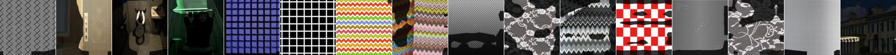
features.7 unit 281: perforated (texture, 0.074384); body (part, 0.028676); airplane (object, 0.022391); building_facade-s (scene, 0.009546); white-c (color, 0.005778); tile (material, 0.002378)
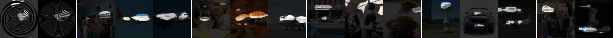
features.7 unit 29: woven (texture, 0.073041); skyscraper (object, 0.055453); skyscraper-s (scene, 0.039869); plastic-opaque (material, 0.011583); crosswalk (part, 0.007551); purple-c (color, 0.005650)
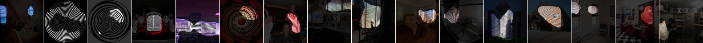
features.7 unit 56: swirly (texture, 0.072759); signboard (object, 0.015191); ball_pit-s (scene, 0.015089); red-c (color, 0.014594); body (part, 0.012199); food (material, 0.007363)
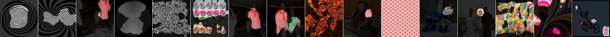
features.7 unit 5: striped (texture, 0.072574); yellow-c (color, 0.011985); moon_bounce-s (scene, 0.009231); wheel (part, 0.009163); bicycle (object, 0.008714); metal (material, 0.004267)
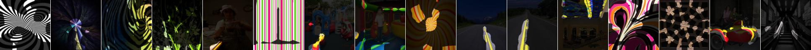
features.7 unit 286: chequered (texture, 0.072012); white-c (color, 0.023506); sky (object, 0.013076); cockpit-s (scene, 0.005756); ceramic (material, 0.005251); screen (part, 0.002392)
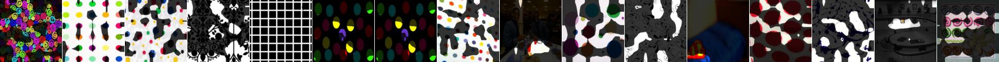
features.7 unit 371: hair (part, 0.071703); person (object, 0.022814); perforated (texture, 0.017527); pink-c (color, 0.006045); ball_pit-s (scene, 0.004988); skin (material, 0.002075)
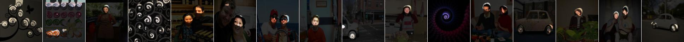
features.7 unit 283: perforated (texture, 0.070982); skyscraper (object, 0.021359); skyscraper-s (scene, 0.017026); crosswalk (part, 0.010751); white-c (color, 0.005924); food (material, 0.002160)
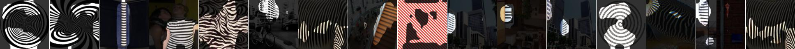
features.7 unit 110: dotted (texture, 0.070690); muzzle (part, 0.031466); dog (object, 0.019250); pink-c (color, 0.008982); food (material, 0.005533); park-s (scene, 0.003769)
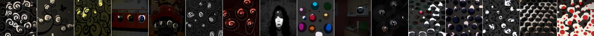
features.7 unit 242: studded (texture, 0.070514); dog (object, 0.008741); ball_pit-s (scene, 0.008563); head (part, 0.008425); black-c (color, 0.007605); carpet (material, 0.003105)
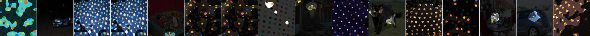
features.7 unit 275: fibrous (texture, 0.070309); wheel (part, 0.017647); motorbike (object, 0.012663); rubble-s (scene, 0.011186); food (material, 0.009201); black-c (color, 0.005500)
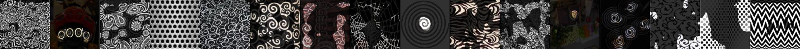
features.7 unit 27: swirly (texture, 0.069565); wheel (part, 0.028396); bicycle (object, 0.019066); labyrinth-indoor-s (scene, 0.010569); white-c (color, 0.006298); glass (material, 0.002672)
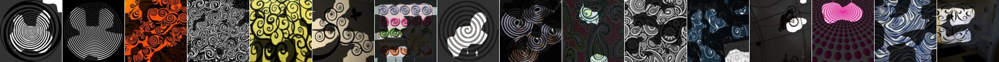
features.7 unit 80: honeycombed (texture, 0.069509); food (material, 0.009708); yellow-c (color, 0.008207); auditorium-s (scene, 0.006311); muzzle (part, 0.005651); dog (object, 0.004812)
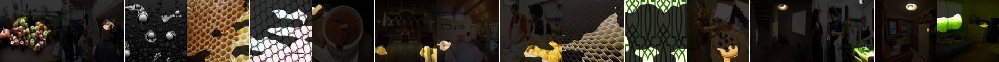
features.7 unit 118: polka-dotted (texture, 0.068529); ball_pit-s (scene, 0.030250); tree (object, 0.016589); food (material, 0.009070); red-c (color, 0.007344); hair (part, 0.003985)
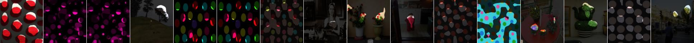
features.7 unit 159: chequered (texture, 0.068513); bus (object, 0.017691); building_facade-s (scene, 0.014081); pane (part, 0.012640); glass (material, 0.009243); red-c (color, 0.007220)
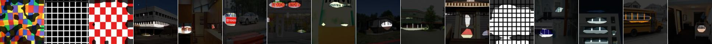
features.7 unit 102: perforated (texture, 0.067679); balcony-interior-s (scene, 0.009869); railing (object, 0.008214); pink-c (color, 0.006974); body (part, 0.004507); food (material, 0.002285)
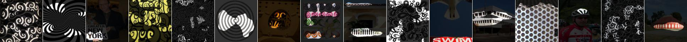
features.7 unit 176: waffled (texture, 0.067327); food (material, 0.030349); ball_pit-s (scene, 0.015473); red-c (color, 0.013588); hair (part, 0.011605); ball (object, 0.008936)
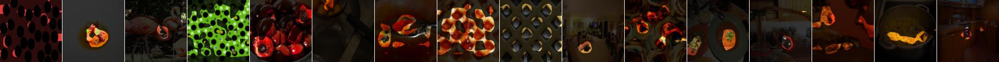
features.7 unit 327: swirly (texture, 0.067304); body (part, 0.023482); signboard (object, 0.020331); shopfront-s (scene, 0.009775); white-c (color, 0.005773); paper (material, 0.003649)
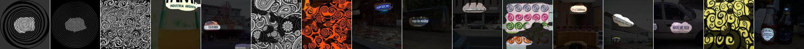
features.7 unit 91: grid (texture, 0.066768); bicycle (object, 0.013863); wheel (part, 0.012154); greenhouse-outdoor-s (scene, 0.008354); white-c (color, 0.006533); glass (material, 0.005383)
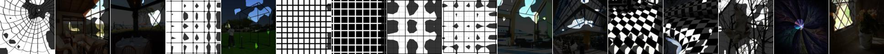
features.7 unit 146: zigzagged (texture, 0.066553); ceramic (material, 0.013063); white-c (color, 0.006879); ceiling (object, 0.006667); bowling_alley-s (scene, 0.005767); crosswalk (part, 0.005476)
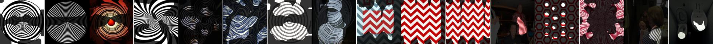
features.7 unit 149: chequered (texture, 0.066307); ball_pit-s (scene, 0.014599); ball (object, 0.008038); metal (material, 0.007127); arm (part, 0.006398); black-c (color, 0.004549)
features.7 unit 329: studded (texture, 0.065532); dog (object, 0.017744); head (part, 0.016777); forest-broadleaf-s (scene, 0.008552); black-c (color, 0.005153); food (material, 0.002715)
features.7 unit 360: chequered (texture, 0.065514); windowpane (object, 0.011226); archive-s (scene, 0.009761); pane (part, 0.007356); glass (material, 0.006574); yellow-c (color, 0.005563)
features.7 unit 73: perforated (texture, 0.065330); coast-s (scene, 0.021552); sea (object, 0.018351); blue-c (color, 0.009783); cloud (part, 0.005938); food (material, 0.003392)
features.7 unit 24: skyscraper (object, 0.065283); skyscraper-s (scene, 0.051322); perforated (texture, 0.025384); brick (material, 0.007524); pink-c (color, 0.004706); crosswalk (part, 0.003378)
features.7 unit 111: swirly (texture, 0.064957); wheel (part, 0.028404); motorbike (object, 0.014206); laundromat-s (scene, 0.010810); glass (material, 0.005032); white-c (color, 0.004591)
features.7 unit 100: dotted (texture, 0.063629); flower (object, 0.023643); florist_shop-indoor-s (scene, 0.012211); red-c (color, 0.010115); wheel (part, 0.006401); food (material, 0.003753)
features.7 unit 165: polka-dotted (texture, 0.063295); ball_pit-s (scene, 0.056842); ball (object, 0.023726); hair (part, 0.013943); black-c (color, 0.008086); fabric (material, 0.003536)
features.7 unit 131: perforated (texture, 0.063002); grass (object, 0.014589); field-cultivated-s (scene, 0.014355); green-c (color, 0.008242); wallpaper (material, 0.003295); crosswalk (part, 0.000860)
features.7 unit 185: dog (object, 0.062789); muzzle (part, 0.040346); matted (texture, 0.025649); oasis-s (scene, 0.006639); food (material, 0.004583); brown-c (color, 0.004535)
features.7 unit 172: banded (texture, 0.062147); skyscraper (object, 0.031937); skyscraper-s (scene, 0.018894); crosswalk (part, 0.015754); white-c (color, 0.006402); plastic-opaque (material, 0.004536)
features.7 unit 152: chequered (texture, 0.061730); leg (part, 0.016212); person (object, 0.014572); black-c (color, 0.006749); museum-indoor-s (scene, 0.005852); fabric (material, 0.003443)
features.7 unit 362: grid (texture, 0.061489); windowpane (object, 0.014613); building_facade-s (scene, 0.011428); pane (part, 0.006543); white-c (color, 0.005581); glass (material, 0.004934)
features.7 unit 353: polka-dotted (texture, 0.061039); white-c (color, 0.008189); laundromat-s (scene, 0.006835); washer (object, 0.005496); metal (material, 0.003287); back (part, 0.002895)

features.7 unit 168: cracked (texture, 0.060964); bicycle (object, 0.010858); white-c (color, 0.008695); wheel (part, 0.007931); amusement_park-s (scene, 0.005719); glass (material, 0.003351)
features.7 unit 277: perforated (texture, 0.060731); water (object, 0.022040); carpet (material, 0.014572); crosswalk (part, 0.012587); coast-s (scene, 0.007656); pink-c (color, 0.005656)
features.7 unit 343: perforated (texture, 0.060396); nose (part, 0.018005); dog (object, 0.010853); ball_pit-s (scene, 0.006816); pink-c (color, 0.004170); food (material, 0.003382)
features.7 unit 138: red-c (color, 0.058559); dotted (texture, 0.037177); car (object, 0.015945); arm (part, 0.012543); fabric (material, 0.010750); florist_shop-indoor-s (scene, 0.009781)
features.7 unit 294: studded (texture, 0.058306); wheel (part, 0.031570); bicycle (object, 0.015330); pink-c (color, 0.006245); ball_pit-s (scene, 0.005632); food (material, 0.004541)
features.7 unit 173: grass (object, 0.057627); veined (texture, 0.040078); green-c (color, 0.027070); park-s (scene, 0.018738); crosswalk (part, 0.007324); metal (material, 0.003552)
features.7 unit 77: perforated (texture, 0.055686); flower (object, 0.017582); cottage_garden-s (scene, 0.010816); purple-c (color, 0.010015); food (material, 0.003570); muzzle (part, 0.002699)
features.7 unit 245: dotted (texture, 0.054074); wheel (part, 0.023977); car (object, 0.015148); laundromat-s (scene, 0.008628); ceramic (material, 0.005005); pink-c (color, 0.004716)
features.7 unit 191: wheel (part, 0.054053); swirly (texture, 0.033641); motorbike (object, 0.022754); laundromat-s (scene, 0.007613); food (material, 0.007566); pink-c (color, 0.004586)
features.7 unit 378: studded (texture, 0.053116); signboard (object, 0.011884); wheel (part, 0.010568); building_facade-s (scene, 0.006446); purple-c (color, 0.004086); glass (material, 0.002755)
features.7 unit 65: dotted (texture, 0.051912); road (object, 0.017184); building_facade-s (scene, 0.006467); white-c (color, 0.006117); crosswalk (part, 0.002386); laminate (material, 0.002274)
features.7 unit 180: perforated (texture, 0.051619); yellow-c (color, 0.011332); field-cultivated-s (scene, 0.011214); sky (object, 0.007746); body (part, 0.007382); fabric (material, 0.003141)
features.7 unit 307: sky (object, 0.051018); blue-c (color, 0.024979); polka-dotted (texture, 0.023875); mountain-s (scene, 0.014364); cloud (part, 0.013298); painted (material, 0.001538)
features.7 unit 43: road (object, 0.051013); street-s (scene, 0.015637); carpet (material, 0.009089); grey-c (color, 0.006506); (texture, 0.004469); wheel (part, 0.003635)
features.7 unit 220: wheel (part, 0.049365); motorbike (object, 0.034598); swirly (texture, 0.022543); food (material, 0.012776); red-c (color, 0.008976); wine_cellar-bottle_storage-s (scene, 0.007178)
features.7 unit 278: zigzagged (texture, 0.048150); wheel (part, 0.018049); bicycle (object, 0.011347); food (material, 0.008198); escalator-indoor-s (scene, 0.006605); red-c (color, 0.005330)
features.7 unit 153: tree (object, 0.047994); polka-dotted (texture, 0.022283); park-s (scene, 0.020326); green-c (color, 0.016228); foliage (material, 0.003850); body (part, 0.001493)
features.7 unit 380: perforated (texture, 0.047033); bow_window-outdoor-s (scene, 0.010472); muzzle (part, 0.009226); dog (object, 0.008736); white-c (color, 0.005410); metal (material, 0.002079)
features.7 unit 332: dotted (texture, 0.046787); eye (part, 0.026820); dog (object, 0.021796); ball_pit-s (scene, 0.012318); red-c (color, 0.011366); carpet (material, 0.004672)
features.7 unit 337: swirly (texture, 0.046657); painting (object, 0.012462); archive-s (scene, 0.009962); glass (material, 0.006982); orange-c (color, 0.005415); wheel (part, 0.004914)
features.7 unit 171: knitted (texture, 0.046516); water (object, 0.020192); field-wild-s (scene, 0.013291); red-c (color, 0.008991); carpet (material, 0.008201); torso (part, 0.005637)
features.7 unit 300: swirly (texture, 0.046340); dog (object, 0.039609); head (part, 0.039074); purple-c (color, 0.007974); creek-s (scene, 0.007937); fabric (material, 0.003550)
features.7 unit 8: perforated (texture, 0.046009); hair (part, 0.025914); person (object, 0.011301); laundromat-s (scene, 0.006166); white-c (color, 0.003628); glass (material, 0.002357)
features.7 unit 121: chequered (texture, 0.045337); car (object, 0.011909); ceramic (material, 0.008788); top (part, 0.005584); poolroom-home-s (scene, 0.005012); white-c (color, 0.003777)
features.7 unit 52: swirly (texture, 0.044597); purple-c (color, 0.043155); flower (object, 0.019098); greenhouse-indoor-s (scene, 0.011419); arm (part, 0.007239); fabric (material, 0.006383)
features.7 unit 237: lined (texture, 0.044524); bus (object, 0.020638); screen (part, 0.014722); building_facade-s (scene, 0.009998); glass (material, 0.007968); white-c (color, 0.005411)
features.7 unit 186: dotted (texture, 0.044523); ball_pit-s (scene, 0.025548); yellow-c (color, 0.010524); ball (object, 0.010320); food (material, 0.006155); leg (part, 0.004259)
features.7 unit 299: zigzagged (texture, 0.044238); skyscraper (object, 0.011473); desert-sand-s (scene, 0.011139); yellow-c (color, 0.010212); carpet (material, 0.007009); torso (part, 0.004545)
features.7 unit 204: grid (texture, 0.043845); white-c (color, 0.013231); windowpane (object, 0.010987); archive-s (scene, 0.006477); pane (part, 0.006441); glass (material, 0.005660)
features.7 unit 158: grid (texture, 0.043760); bus (object, 0.015031); casino-indoor-s (scene, 0.013333); screen (part, 0.012820); glass (material, 0.006513); black-c (color, 0.006376)
features.7 unit 169: tree (object, 0.043567); sprinkled (texture, 0.028265); forest-broadleaf-s (scene, 0.021467); green-c (color, 0.018753); food (material, 0.005727); shop window (part, 0.001179)
features.7 unit 28: zigzagged (texture, 0.043228); wheel (part, 0.014877); ceramic (material, 0.009170); bicycle (object, 0.008845); red-c (color, 0.004525); baggage_claim-s (scene, 0.004186)
features.7 unit 199: wheel (part, 0.043089); swirly (texture, 0.033550); motorbike (object, 0.021986); ceramic (material, 0.021561); labyrinth-indoor-s (scene, 0.005871); pink-c (color, 0.005146)
features.7 unit 54: perforated (texture, 0.042926); white-c (color, 0.007042); office-s (scene, 0.005365); cabinet (object, 0.004827); metal (material, 0.004618); back (part, 0.003404)
features.7 unit 194: ball_pit-s (scene, 0.042556); dotted (texture, 0.035995); ball (object, 0.020212); arm (part, 0.016749); red-c (color, 0.016674); food (material, 0.009622)
features.7 unit 359: grass (object, 0.042049); green-c (color, 0.030624); frilly (texture, 0.029431); park-s (scene, 0.020671); wheel (part, 0.006554); food (material, 0.005090)
features.7 unit 341: studded (texture, 0.041806); white-c (color, 0.008994); glass (material, 0.008701); windowpane (object, 0.007622); pane (part, 0.006665); forest-broadleaf-s (scene, 0.004811)
features.7 unit 155: person (object, 0.041600); head (part, 0.039458); pink-c (color, 0.025823); polka-dotted (texture, 0.018761); skin (material, 0.015979); auto_mechanics-indoor-s (scene, 0.011698)
features.7 unit 263: cracked (texture, 0.041531); dog (object, 0.013881); paw (part, 0.013246); ball_pit-s (scene, 0.012253); food (material, 0.011644); yellow-c (color, 0.009062)
features.7 unit 96: chequered (texture, 0.041486); white-c (color, 0.005521); office-s (scene, 0.005392); table (object, 0.004876); wood (material, 0.004242); arm (part, 0.002355)
features.7 unit 338: perforated (texture, 0.041324); forest-broadleaf-s (scene, 0.012890); food (material, 0.012865); tree (object, 0.011837); green-c (color, 0.007591); pot (part, 0.001452)
features.7 unit 260: honeycombed (texture, 0.041149); motorbike (object, 0.010769); wheel (part, 0.009753); red-c (color, 0.004943); florist_shop-indoor-s (scene, 0.004578); food (material, 0.002788)
features.7 unit 267: painting (object, 0.040889); glass (material, 0.014620); pantry-s (scene, 0.010096); screen (part, 0.009659); swirly (texture, 0.005339); red-c (color, 0.004181)
features.7 unit 328: dotted (texture, 0.039760); bus (object, 0.008475); white-c (color, 0.007664); moon_bounce-s (scene, 0.007631); screen (part, 0.005517); painted (material, 0.004829)
features.7 unit 324: plant (object, 0.039599); ball_pit-s (scene, 0.031704); green-c (color, 0.022266); frilly (texture, 0.018911); food (material, 0.007861); wheel (part, 0.005738)
features.7 unit 346: zigzagged (texture, 0.039472); blue-c (color, 0.027206); mountain_snowy-s (scene, 0.026046); sky (object, 0.012388); body (part, 0.008038); glass (material, 0.004653)
features.7 unit 16: perforated (texture, 0.039429); dog (object, 0.021453); muzzle (part, 0.019028); white-c (color, 0.009403); shoe_shop-s (scene, 0.003870); ceramic (material, 0.003059)
features.7 unit 249: banded (texture, 0.038889); screen (part, 0.012551); building_facade-s (scene, 0.012449); tvmonitor (object, 0.011614); glass (material, 0.004830); orange-c (color, 0.004125)
features.7 unit 89: swirly (texture, 0.038088); head (part, 0.027046); dog (object, 0.019910); laundromat-s (scene, 0.006728); pink-c (color, 0.004070); metal (material, 0.003152)

features.7 unit 335: cracked (texture, 0.037650); wheel (part, 0.036043); bicycle (object, 0.030542); white-c (color, 0.007746); dining_room-s (scene, 0.007232); glass (material, 0.005822)
features.7 unit 163: chequered (texture, 0.037084); office_building-s (scene, 0.012673); book (object, 0.009659); screen (part, 0.008394); glass (material, 0.006065); white-c (color, 0.005302)
features.7 unit 79: perforated (texture, 0.036998); building_facade-s (scene, 0.007751); skyscraper (object, 0.005519); white-c (color, 0.005418); painted (material, 0.003669); balcony (part, 0.001655)
features.7 unit 289: perforated (texture, 0.036966); water (object, 0.017168); torso (part, 0.009233); creek-s (scene, 0.007707); blue-c (color, 0.006284); carpet (material, 0.006246)
features.7 unit 269: striped (texture, 0.036617); bird (object, 0.011499); wing (part, 0.007108); metal (material, 0.006025); red-c (color, 0.005035); attic-s (scene, 0.004736)
features.7 unit 30: meshed (texture, 0.036261); car (object, 0.008049); coach (part, 0.006980); skyscraper-s (scene, 0.006549); red-c (color, 0.005445); food (material, 0.004141)
features.7 unit 4: banded (texture, 0.036108); white-c (color, 0.011774); sky (object, 0.008228); balcony-interior-s (scene, 0.005405); painted (material, 0.004910); roof (part, 0.002349)
features.7 unit 322: striped (texture, 0.035992); wheel (part, 0.017711); closet-s (scene, 0.009380); person (object, 0.007984); fabric (material, 0.007025); red-c (color, 0.006267)
features.7 unit 189: sky (object, 0.035840); blue-c (color, 0.012442); roundabout-s (scene, 0.011756); (texture, 0.005408); cloud (part, 0.002549); glass (material, 0.001497)
features.7 unit 157: grid (texture, 0.035766); roof (part, 0.013846); fence (object, 0.007940); balcony-interior-s (scene, 0.006775); fabric (material, 0.005097); white-c (color, 0.004724)
features.7 unit 190: dotted (texture, 0.035337); wheel (part, 0.020250); washer (object, 0.010598); laundromat-s (scene, 0.009238); black-c (color, 0.006795); glass (material, 0.005179)
features.7 unit 107: grid (texture, 0.034967); building_facade-s (scene, 0.013466); skyscraper (object, 0.013227); pane (part, 0.006025); white-c (color, 0.005972); glass (material, 0.005428)
features.7 unit 264: dog (object, 0.034914); head (part, 0.029598); waffled (texture, 0.019334); food (material, 0.014756); orange-c (color, 0.008093); archaelogical_excavation-s (scene, 0.004782)
features.7 unit 106: perforated (texture, 0.034899); skyscraper (object, 0.014474); skyscraper-s (scene, 0.010137); body (part, 0.006859); fabric (material, 0.005648); red-c (color, 0.005411)
features.7 unit 50: swirly (texture, 0.034826); wheel (part, 0.016855); bicycle (object, 0.011357); white-c (color, 0.009652); archive-s (scene, 0.007539); glass (material, 0.004958)
features.7 unit 208: perforated (texture, 0.034722); tree (object, 0.022546); green-c (color, 0.016781); creek-s (scene, 0.009701); metal (material, 0.003422); torso (part, 0.002061)
features.7 unit 195: banded (texture, 0.034687); windowpane (object, 0.011358); pane (part, 0.010203); glass (material, 0.009247); bow_window-outdoor-s (scene, 0.008711); white-c (color, 0.004513)
features.7 unit 206: studded (texture, 0.034139); sky (object, 0.012848); mountain_snowy-s (scene, 0.012836); blue-c (color, 0.007746); metal (material, 0.003862); wing (part, 0.003487)
features.7 unit 166: studded (texture, 0.033911); wheel (part, 0.014949); dog (object, 0.013248); casino-indoor-s (scene, 0.006171); purple-c (color, 0.005200); metal (material, 0.003332)
features.7 unit 248: chequered (texture, 0.033615); skyscraper-s (scene, 0.008455); plant (object, 0.006244); red-c (color, 0.005739); leg (part, 0.004585); food (material, 0.004156)
features.7 unit 213: banded (texture, 0.033195); door (object, 0.009891); corridor-s (scene, 0.007018); door frame (part, 0.005723); white-c (color, 0.005025); glass (material, 0.004477)
features.7 unit 20: swirly (texture, 0.032975); car (object, 0.010950); blue-c (color, 0.010114); ball_pit-s (scene, 0.006750); leg (part, 0.006134); fabric (material, 0.004474)

features.7 unit 11: swirly (texture, 0.032637); bird (object, 0.017924); head (part, 0.014533); mountain_snowy-s (scene, 0.010221); food (material, 0.008491); pink-c (color, 0.007417)
features.7 unit 15: dotted (texture, 0.032491); ball_pit-s (scene, 0.014695); motorbike (object, 0.010448); arm (part, 0.005094); yellow-c (color, 0.003513); food (material, 0.003325)
features.7 unit 285: polka-dotted (texture, 0.032342); tree (object, 0.019972); green-c (color, 0.010269); park-s (scene, 0.008147); hair (part, 0.002867); glass (material, 0.002804)
features.7 unit 64: paisley (texture, 0.032279); purple-c (color, 0.010278); ball_pit-s (scene, 0.009623); table (object, 0.009623); carpet (material, 0.007114); wheel (part, 0.006091)
features.7 unit 105: chequered (texture, 0.032237); motorbike (object, 0.023733); wheel (part, 0.008584); clothing_store-s (scene, 0.004385); red-c (color, 0.003970); food (material, 0.002453)
features.7 unit 311: striped (texture, 0.032025); sky (object, 0.010502); white-c (color, 0.006456); roundabout-s (scene, 0.005854); wheel (part, 0.004552); metal (material, 0.002038)
features.7 unit 270: swirly (texture, 0.031825); black-c (color, 0.011165); movie_theater-indoor-s (scene, 0.011107); motorbike (object, 0.008948); wheel (part, 0.006162); fabric (material, 0.003254)
features.7 unit 268: striped (texture, 0.031518); wheel (part, 0.015887); bicycle (object, 0.009243); metal (material, 0.007076); escalator-indoor-s (scene, 0.006557); orange-c (color, 0.004641)
features.7 unit 62: dotted (texture, 0.030399); wheel (part, 0.029131); motorbike (object, 0.013706); food (material, 0.005572); laundromat-s (scene, 0.005483); yellow-c (color, 0.003155)
features.7 unit 37: polka-dotted (texture, 0.030390); wheel (part, 0.007974); car (object, 0.006299); yellow-c (color, 0.005640); conference_room-s (scene, 0.005266); glass (material, 0.003154)
features.7 unit 94: swirly (texture, 0.030355); red-c (color, 0.012349); flower (object, 0.010820); ball_pit-s (scene, 0.009375); wheel (part, 0.005935); fabric (material, 0.003448)
features.7 unit 296: banded (texture, 0.030047); yellow-c (color, 0.014462); ball_pit-s (scene, 0.006542); ceiling (object, 0.004859); food (material, 0.004752); crosswalk (part, 0.003939)
features.7 unit 231: grid (texture, 0.030032); bow_window-outdoor-s (scene, 0.010585); wheel (part, 0.009492); windowpane (object, 0.007467); white-c (color, 0.006367); metal (material, 0.004539)
features.7 unit 298: striped (texture, 0.029951); cat (object, 0.006812); amphitheater-s (scene, 0.006254); head (part, 0.006176); carpet (material, 0.004587); white-c (color, 0.004425)
features.7 unit 71: orange-c (color, 0.029889); wood (material, 0.015413); table (object, 0.011831); conference_room-s (scene, 0.005775); chequered (texture, 0.005512); drawer (part, 0.004641)
features.7 unit 355: sky (object, 0.029746); mountain-s (scene, 0.013843); dotted (texture, 0.013115); white-c (color, 0.011384); roof (part, 0.003968); painted (material, 0.003748)
features.7 unit 98: green-c (color, 0.029606); grass (object, 0.025175); polka-dotted (texture, 0.022060); poolroom-home-s (scene, 0.013806); body (part, 0.009554); plastic-opaque (material, 0.004426)
features.7 unit 132: porous (texture, 0.029573); tree (object, 0.021089); forest-broadleaf-s (scene, 0.019739); green-c (color, 0.009487); food (material, 0.007704); head (part, 0.003943)
features.7 unit 68: grid (texture, 0.029514); pane (part, 0.020857); windowpane (object, 0.017399); glass (material, 0.015317); white-c (color, 0.010492); dining_room-s (scene, 0.004728)
features.7 unit 234: crosshatched (texture, 0.029425); skyscraper (object, 0.013412); wheel (part, 0.011236); skyscraper-s (scene, 0.010522); carpet (material, 0.008235); pink-c (color, 0.004817)
features.7 unit 61: wheel (part, 0.029381); car (object, 0.027594); swirly (texture, 0.008315); building_facade-s (scene, 0.006654); food (material, 0.005450); black-c (color, 0.005157)
features.7 unit 284: lined (texture, 0.029192); ceramic (material, 0.012441); boat (object, 0.008315); body (part, 0.007835); roundabout-s (scene, 0.007170); orange-c (color, 0.004592)

features.7 unit 133: banded (texture, 0.029167); ball_pit-s (scene, 0.023926); ball (object, 0.014582); yellow-c (color, 0.008492); food (material, 0.007285); wheel (part, 0.006355)
features.7 unit 232: striped (texture, 0.029071); wheel (part, 0.022872); bicycle (object, 0.014471); metal (material, 0.006378); staircase-s (scene, 0.004699); red-c (color, 0.004523)
features.7 unit 127: banded (texture, 0.029008); curtain (object, 0.011042); closet-s (scene, 0.008187); door frame (part, 0.004997); white-c (color, 0.003249); metal (material, 0.002751)
features.7 unit 67: grid (texture, 0.028958); wheel (part, 0.017009); bicycle (object, 0.014143); green-c (color, 0.004655); auditorium-s (scene, 0.004578); glass (material, 0.003470)
features.7 unit 122: swirly (texture, 0.028886); amusement_park-s (scene, 0.010492); wheel (part, 0.008466); orange-c (color, 0.008216); chair (object, 0.007753); food (material, 0.004989)
features.7 unit 291: cat (object, 0.028690); head (part, 0.021661); spiralled (texture, 0.010735); pink-c (color, 0.003862); fabric (material, 0.003550); florist_shop-outdoor-s (scene, 0.002954)
features.7 unit 273: zigzagged (texture, 0.028625); wheel (part, 0.008205); closet-s (scene, 0.006056); tvmonitor (object, 0.005888); yellow-c (color, 0.005593); metal (material, 0.005584)
features.7 unit 348: chequered (texture, 0.028595); mountain_snowy-s (scene, 0.015253); rock (object, 0.012539); purple-c (color, 0.012158); muzzle (part, 0.009361); food (material, 0.007150)
features.7 unit 19: banded (texture, 0.028418); railing (object, 0.019258); headboard (part, 0.010750); nursery-s (scene, 0.010307); fabric (material, 0.007793); orange-c (color, 0.005347)
features.7 unit 70: person (object, 0.028233); wheel (part, 0.019214); swirly (texture, 0.016824); blue-c (color, 0.013862); auto_mechanics-indoor-s (scene, 0.008551); fabric (material, 0.008116)
features.7 unit 34: red-c (color, 0.028078); pot (part, 0.008121); table (object, 0.008053); paisley (texture, 0.007606); wood (material, 0.005888); living_room-s (scene, 0.005514)
features.7 unit 154: tree (object, 0.027897); park-s (scene, 0.012468); green-c (color, 0.011559); (texture, 0.005072); glass (material, 0.003024); pane (part, 0.001925)
features.7 unit 209: tree (object, 0.027811); green-c (color, 0.015796); woven (texture, 0.014054); forest-broadleaf-s (scene, 0.013863); shop window (part, 0.002072); granite (material, 0.001526)
features.7 unit 2: red-c (color, 0.027749); swirly (texture, 0.023910); chair (object, 0.020501); dining_room-s (scene, 0.012887); wood (material, 0.012515); arm (part, 0.010106)
features.7 unit 142: perforated (texture, 0.027556); fabric (material, 0.006893); grass (object, 0.006825); blue-c (color, 0.005875); skyscraper-s (scene, 0.005868); torso (part, 0.005130)
features.7 unit 182: tree (object, 0.027456); park-s (scene, 0.011756); zigzagged (texture, 0.008577); wing (part, 0.008041); blue-c (color, 0.007681); food (material, 0.003545)
features.7 unit 3: swirly (texture, 0.027415); wheel (part, 0.018505); car (object, 0.018119); purple-c (color, 0.011683); airport_terminal-s (scene, 0.006230); fabric (material, 0.003520)

features.7 unit 306: striped (texture, 0.027405); escalator-outdoor-s (scene, 0.007599); chair (object, 0.007265); white-c (color, 0.005334); metal (material, 0.005227); screen (part, 0.004797)
features.7 unit 101: wheel (part, 0.026987); spiralled (texture, 0.020910); bicycle (object, 0.015243); dinette-vehicle-s (scene, 0.004455); metal (material, 0.004263); white-c (color, 0.003845)
features.7 unit 352: polka-dotted (texture, 0.026936); orange-c (color, 0.019762); bus (object, 0.009047); food (material, 0.007466); roof (part, 0.006681); auditorium-s (scene, 0.004711)
features.7 unit 117: spiralled (texture, 0.026679); hair (part, 0.010202); amphitheater-s (scene, 0.008025); bed (object, 0.007450); metal (material, 0.006761); orange-c (color, 0.003885)
features.7 unit 365: polka-dotted (texture, 0.026653); red-c (color, 0.024329); car (object, 0.008835); ball_pit-s (scene, 0.007025); fabric (material, 0.006770); arm (part, 0.006757)
features.7 unit 174: spiralled (texture, 0.026622); ceramic (material, 0.012317); track (object, 0.010067); wheel (part, 0.008936); supermarket-s (scene, 0.005426); orange-c (color, 0.005355)
features.7 unit 7: blue-c (color, 0.026598); sky (object, 0.025299); paisley (texture, 0.012673); building_facade-s (scene, 0.010622); wheel (part, 0.002756); glass (material, 0.002109)
features.7 unit 46: banded (texture, 0.026590); red-c (color, 0.013338); chair (object, 0.009270); art_studio-s (scene, 0.007572); leg (part, 0.007126); fabric (material, 0.005561)
features.7 unit 228: spiralled (texture, 0.026567); wheel (part, 0.021830); bicycle (object, 0.011943); subway_station-corridor-s (scene, 0.006589); metal (material, 0.004394); white-c (color, 0.003946)
features.7 unit 86: perforated (texture, 0.026231); cat (object, 0.018358); muzzle (part, 0.012777); forest-needleleaf-s (scene, 0.006953); food (material, 0.005719); purple-c (color, 0.004259)
features.7 unit 82: zigzagged (texture, 0.026222); ball_pit-s (scene, 0.017282); food (material, 0.013070); orange-c (color, 0.012800); motorbike (object, 0.010394); wheel (part, 0.005433)
features.7 unit 161: perforated (texture, 0.025774); hair (part, 0.015920); cow (object, 0.014956); red-c (color, 0.009515); food (material, 0.005921); bus_interior-s (scene, 0.004828)

features.7 unit 32: floor (object, 0.025354); banded (texture, 0.022419); carpet (material, 0.015752); red-c (color, 0.009909); building_facade-s (scene, 0.007575); crosswalk (part, 0.007469)
features.7 unit 202: flower (object, 0.025339); ball_pit-s (scene, 0.024777); sprinkled (texture, 0.023456); food (material, 0.021131); orange-c (color, 0.016257); torso (part, 0.005851)

features.7 unit 136: polka-dotted (texture, 0.025271); tree (object, 0.020663); black-c (color, 0.013211); forest-needleleaf-s (scene, 0.010214); wheel (part, 0.008610); leather (material, 0.003635)
features.7 unit 76: zigzagged (texture, 0.025050); table (object, 0.012941); black-c (color, 0.008434); wheel (part, 0.008230); metal (material, 0.007533); cockpit-s (scene, 0.006198)
features.7 unit 59: zigzagged (texture, 0.024991); subway_station-corridor-s (scene, 0.008756); platform (object, 0.008514); wheel (part, 0.006171); carpet (material, 0.005691); black-c (color, 0.004386)
features.7 unit 305: spiralled (texture, 0.024925); wheel (part, 0.008166); bed (object, 0.007548); metal (material, 0.005922); cloister-indoor-s (scene, 0.005338); red-c (color, 0.003912)
features.7 unit 175: chequered (texture, 0.024850); person (object, 0.013608); leg (part, 0.012865); black-c (color, 0.011049); dining_room-s (scene, 0.008981); fabric (material, 0.005186)
features.7 unit 26: striped (texture, 0.024834); apartment_building-outdoor-s (scene, 0.009825); track (object, 0.008809); roof (part, 0.006049); ceramic (material, 0.004308); pink-c (color, 0.003483)
features.7 unit 47: polka-dotted (texture, 0.024797); food (material, 0.012469); yellow-c (color, 0.010175); ball_pit-s (scene, 0.007931); floor (object, 0.007208); arm (part, 0.006771)
features.7 unit 333: swirly (texture, 0.024685); white-c (color, 0.014346); sky (object, 0.006784); building_facade-s (scene, 0.005426); body (part, 0.004116); glass (material, 0.002897)
features.7 unit 254: swirly (texture, 0.024609); head (part, 0.009541); playroom-s (scene, 0.006822); orange-c (color, 0.005604); wall (object, 0.005478); painted (material, 0.005093)
features.7 unit 336: red-c (color, 0.024405); swirly (texture, 0.011168); wood (material, 0.006903); body (part, 0.005911); casino-indoor-s (scene, 0.005856); bottle (object, 0.005726)
features.7 unit 326: zigzagged (texture, 0.024355); dog (object, 0.012431); muzzle (part, 0.009605); ceramic (material, 0.005300); baggage_claim-s (scene, 0.004915); yellow-c (color, 0.004689)
features.7 unit 381: zigzagged (texture, 0.024345); tree (object, 0.010107); red-c (color, 0.007414); ball_pit-s (scene, 0.007267); glass (material, 0.003701); coach (part, 0.001638)
features.7 unit 374: hair (part, 0.024336); perforated (texture, 0.012522); pink-c (color, 0.010551); person (object, 0.010423); skyscraper-s (scene, 0.007927); brick (material, 0.002150)
features.7 unit 36: wheel (part, 0.024068); spiralled (texture, 0.020912); bicycle (object, 0.011984); dinette-vehicle-s (scene, 0.005942); black-c (color, 0.005623); metal (material, 0.004963)
features.7 unit 6: bus (object, 0.023943); grid (texture, 0.011427); building_facade-s (scene, 0.010521); glass (material, 0.007487); screen (part, 0.006462); white-c (color, 0.003195)

features.7 unit 230: sprinkled (texture, 0.023914); ball_pit-s (scene, 0.022103); flower (object, 0.012899); food (material, 0.007458); red-c (color, 0.006728); muzzle (part, 0.004334)
features.7 unit 97: meshed (texture, 0.023867); painted (material, 0.007113); sky (object, 0.006539); subway_station-corridor-s (scene, 0.006201); white-c (color, 0.006038); wheel (part, 0.004448)
features.7 unit 200: forest-broadleaf-s (scene, 0.023855); tree (object, 0.023631); potholed (texture, 0.018078); green-c (color, 0.011274); head (part, 0.007203); food (material, 0.006666)
features.7 unit 262: chequered (texture, 0.023747); floor (object, 0.010451); ball_pit-s (scene, 0.008588); arm (part, 0.007626); carpet (material, 0.007131); orange-c (color, 0.005375)
features.7 unit 135: blue-c (color, 0.023647); screen (part, 0.021532); sky (object, 0.016481); swirly (texture, 0.015285); field-cultivated-s (scene, 0.007411); glass (material, 0.006326)
features.7 unit 49: cracked (texture, 0.023645); wheel (part, 0.021159); bicycle (object, 0.013752); white-c (color, 0.005756); abbey-s (scene, 0.004145); paper (material, 0.002067)
features.7 unit 40: striped (texture, 0.023626); closet-s (scene, 0.006662); red-c (color, 0.006106); curtain (object, 0.006003); wheel (part, 0.004599); wood (material, 0.003256)
features.7 unit 44: muzzle (part, 0.023551); striped (texture, 0.016849); dog (object, 0.015030); music_studio-s (scene, 0.004281); white-c (color, 0.003724); glass (material, 0.002838)
features.7 unit 210: paisley (texture, 0.023346); grass (object, 0.008466); green-c (color, 0.005897); carpet (material, 0.005720); childs_room-s (scene, 0.004931); wheel (part, 0.003487)
features.7 unit 367: leg (part, 0.023344); horse (object, 0.015491); chequered (texture, 0.007355); ice_skating_rink-indoor-s (scene, 0.005990); red-c (color, 0.004902); glass (material, 0.002711)
features.7 unit 258: perforated (texture, 0.022918); yellow-c (color, 0.015760); food (material, 0.014403); motorbike (object, 0.010130); wheel (part, 0.006985); restaurant-s (scene, 0.004232)

features.7 unit 276: ball_pit-s (scene, 0.022807); swirly (texture, 0.020965); red-c (color, 0.019315); wheel (part, 0.012715); motorbike (object, 0.010822); carpet (material, 0.006286)
features.7 unit 313: wheel (part, 0.022580); dotted (texture, 0.022543); road (object, 0.016203); carpet (material, 0.007867); street-s (scene, 0.006650); red-c (color, 0.006371)
features.7 unit 382: perforated (texture, 0.022550); car (object, 0.007540); wheel (part, 0.006773); black-c (color, 0.004701); living_room-s (scene, 0.004150); glass (material, 0.003439)
features.7 unit 370: polka-dotted (texture, 0.022477); blue-c (color, 0.017916); sky (object, 0.016951); screen (part, 0.011177); skyscraper-s (scene, 0.009735); glass (material, 0.004201)
features.7 unit 344: perforated (texture, 0.022070); skyscraper-s (scene, 0.017333); skyscraper (object, 0.015048); wheel (part, 0.012349); carpet (material, 0.005250); pink-c (color, 0.004570)

features.7 unit 197: car (object, 0.022061); swirly (texture, 0.019491); body (part, 0.008989); street-s (scene, 0.004638); pink-c (color, 0.002912); food (material, 0.001640)
features.7 unit 114: wheel (part, 0.021932); car (object, 0.013629); studded (texture, 0.010866); black-c (color, 0.009108); bus_depot-outdoor-s (scene, 0.005813); carpet (material, 0.003608)
features.7 unit 357: dotted (texture, 0.021917); person (object, 0.011077); arm (part, 0.010788); ball_pit-s (scene, 0.007740); fabric (material, 0.004887); pink-c (color, 0.004826)
features.7 unit 247: mountain_snowy-s (scene, 0.021822); mountain (object, 0.011181); blue-c (color, 0.006499); lacelike (texture, 0.006218); roof (part, 0.005460); tile (material, 0.001967)

features.7 unit 88: dotted (texture, 0.021792); white-c (color, 0.010022); car (object, 0.008495); living_room-s (scene, 0.006480); metal (material, 0.006430); arm (part, 0.003871)
features.7 unit 17: cat (object, 0.021765); head (part, 0.021732); swirly (texture, 0.013345); subway_station-corridor-s (scene, 0.003713); pink-c (color, 0.003489); fabric (material, 0.003366)
features.7 unit 81: cracked (texture, 0.021371); pink-c (color, 0.019235); head (part, 0.011599); person (object, 0.009349); carpet (material, 0.006894); living_room-s (scene, 0.004704)
features.7 unit 368: crosshatched (texture, 0.021367); cat (object, 0.013039); head (part, 0.009730); subway_station-corridor-s (scene, 0.005154); wallpaper (material, 0.004552); pink-c (color, 0.004327)
features.7 unit 48: grass (object, 0.021142); woven (texture, 0.018931); yellow-c (color, 0.014290); building_facade-s (scene, 0.008504); food (material, 0.006199); roof (part, 0.004361)
features.7 unit 376: banded (texture, 0.020849); floor (object, 0.017601); white-c (color, 0.008850); leg (part, 0.008301); dining_room-s (scene, 0.007924); wood (material, 0.007296)
features.7 unit 342: zigzagged (texture, 0.020777); red-c (color, 0.019861); food (material, 0.015276); motorbike (object, 0.015050); ball_pit-s (scene, 0.014815); body (part, 0.007818)
features.7 unit 323: honeycombed (texture, 0.020511); ceiling (object, 0.005246); pink-c (color, 0.005105); living_room-s (scene, 0.005043); arm (part, 0.002817); painted (material, 0.002539)
features.7 unit 214: perforated (texture, 0.020422); head (part, 0.012643); dog (object, 0.006165); white-c (color, 0.004616); shoe_shop-s (scene, 0.003796); painted (material, 0.001779)

features.7 unit 238: sky (object, 0.020351); mountain_snowy-s (scene, 0.018816); blue-c (color, 0.015278); chequered (texture, 0.013509); screen (part, 0.001459); fabric (material, 0.001456)
features.7 unit 315: plant (object, 0.020280); creek-s (scene, 0.017933); stratified (texture, 0.013502); green-c (color, 0.009521); food (material, 0.005495); wheel (part, 0.003326)
features.7 unit 316: wheel (part, 0.020275); dotted (texture, 0.018851); food (material, 0.016341); bicycle (object, 0.011606); red-c (color, 0.008276); laundromat-s (scene, 0.006667)

features.7 unit 347: chequered (texture, 0.020169); bus (object, 0.011723); pantry-s (scene, 0.006816); shop window (part, 0.005690); white-c (color, 0.003981); glass (material, 0.003296)

features.7 unit 364: perforated (texture, 0.020137); ceiling (object, 0.008578); orange-c (color, 0.006226); auditorium-s (scene, 0.006099); roof (part, 0.003691); painted (material, 0.003664)
features.7 unit 41: food (material, 0.019878); car (object, 0.012312); wheel (part, 0.011224); pantry-s (scene, 0.008044); spiralled (texture, 0.007799); red-c (color, 0.004709)
features.7 unit 178: zigzagged (texture, 0.019718); staircase-s (scene, 0.009775); track (object, 0.007776); granite (material, 0.005453); white-c (color, 0.004634); footboard (part, 0.004491)
features.7 unit 18: leg (part, 0.019705); horse (object, 0.014980); studded (texture, 0.009462); dining_room-s (scene, 0.003710); glass (material, 0.003447); black-c (color, 0.002506)
features.7 unit 239: spiralled (texture, 0.019590); ceramic (material, 0.010904); track (object, 0.009409); baggage_claim-s (scene, 0.007541); white-c (color, 0.005024); roof (part, 0.003905)
features.7 unit 201: wheel (part, 0.019488); swirly (texture, 0.018194); windowpane (object, 0.013475); glass (material, 0.007611); building_facade-s (scene, 0.007249); green-c (color, 0.003252)
features.7 unit 113: cat (object, 0.019297); striped (texture, 0.018497); head (part, 0.014416); white-c (color, 0.006801); carpet (material, 0.005923); ball_pit-s (scene, 0.004175)

features.7 unit 304: car (object, 0.019015); wheel (part, 0.016383); swirly (texture, 0.008944); auto_showroom-s (scene, 0.005597); red-c (color, 0.003483); metal (material, 0.002590)
features.7 unit 215: perforated (texture, 0.018966); earth (object, 0.009255); torso (part, 0.008479); mountain_snowy-s (scene, 0.006925); food (material, 0.005644); white-c (color, 0.003989)
features.7 unit 345: spiralled (texture, 0.018852); black-c (color, 0.006038); ceiling (object, 0.006015); screen (part, 0.004092); metal (material, 0.004011); laundromat-s (scene, 0.003865)
features.7 unit 361: chequered (texture, 0.018821); skyscraper-s (scene, 0.008514); building (object, 0.007445); blue-c (color, 0.005092); roof (part, 0.003042); metal (material, 0.002870)
features.7 unit 9: swirly (texture, 0.018788); painting (object, 0.016705); eye (part, 0.016604); glass (material, 0.008603); building_facade-s (scene, 0.008464); black-c (color, 0.004273)
features.7 unit 226: perforated (texture, 0.018756); hair (part, 0.018259); dog (object, 0.014664); subway_interior-s (scene, 0.003748); brown-c (color, 0.003183); metal (material, 0.002839)
features.7 unit 66: shade (part, 0.018732); orange-c (color, 0.016790); lamp (object, 0.016443); dotted (texture, 0.015477); casino-indoor-s (scene, 0.009481); glass (material, 0.005703)
features.7 unit 187: spiralled (texture, 0.018660); bus (object, 0.006954); body (part, 0.006368); building_facade-s (scene, 0.005640); white-c (color, 0.004260); metal (material, 0.003878)
features.7 unit 103: building_facade-s (scene, 0.018629); windowpane (object, 0.016110); glass (material, 0.008519); pane (part, 0.008360); perforated (texture, 0.005453); green-c (color, 0.004663)
features.7 unit 69: tree (object, 0.018620); green-c (color, 0.014693); frilly (texture, 0.010336); park-s (scene, 0.008960); food (material, 0.003760); body (part, 0.002989)
features.7 unit 354: dotted (texture, 0.018480); motorbike (object, 0.015041); red-c (color, 0.012135); wheel (part, 0.008453); cockpit-s (scene, 0.005641); fabric (material, 0.003440)
features.7 unit 145: plant (object, 0.018042); green-c (color, 0.015063); frilly (texture, 0.012209); park-s (scene, 0.007187); food (material, 0.004558); body (part, 0.004380)
features.7 unit 212: perforated (texture, 0.017933); person (object, 0.009988); head (part, 0.008391); pink-c (color, 0.004942); swimming_pool-outdoor-s (scene, 0.004176); food (material, 0.003278)

features.7 unit 42: food (material, 0.017863); perforated (texture, 0.013898); rock (object, 0.010301); red-c (color, 0.009054); bakery-shop-s (scene, 0.008669); hair (part, 0.004657)
features.7 unit 287: paisley (texture, 0.017645); ball_pit-s (scene, 0.014973); blue-c (color, 0.010988); ball (object, 0.006877); leg (part, 0.006194); carpet (material, 0.004035)
features.7 unit 167: swirly (texture, 0.017616); sky (object, 0.015781); forest-broadleaf-s (scene, 0.009382); blue-c (color, 0.008552); wallpaper (material, 0.001637); wheel (part, 0.001339)
features.7 unit 229: striped (texture, 0.017471); skyscraper-s (scene, 0.008210); skyscraper (object, 0.005573); roof (part, 0.004148); white-c (color, 0.003956); metal (material, 0.003066)
features.7 unit 303: sky (object, 0.017445); white-c (color, 0.012031); dotted (texture, 0.010733); castle-s (scene, 0.009558); glass (material, 0.003604); shade (part, 0.002382)
features.7 unit 265: yellow-c (color, 0.017336); bus (object, 0.015427); dotted (texture, 0.014756); ball_pit-s (scene, 0.010240); shade (part, 0.006399); food (material, 0.004586)
features.7 unit 224: meshed (texture, 0.017246); bicycle (object, 0.007918); wing (part, 0.005540); gymnasium-indoor-s (scene, 0.004071); metal (material, 0.003109); white-c (color, 0.003093)
features.7 unit 319: ear (part, 0.017243); dog (object, 0.014787); striped (texture, 0.014145); food (material, 0.006183); catwalk-s (scene, 0.005334); pink-c (color, 0.004722)
features.7 unit 84: wrinkled (texture, 0.017159); sky (object, 0.012837); painted (material, 0.011626); blue-c (color, 0.009300); mountain_snowy-s (scene, 0.008895); screen (part, 0.003766)
features.7 unit 115: hair (part, 0.017003); dotted (texture, 0.016182); person (object, 0.014365); ball_pit-s (scene, 0.008011); red-c (color, 0.005343); food (material, 0.002199)
features.7 unit 314: car (object, 0.016952); wheel (part, 0.014205); sprinkled (texture, 0.008062); kindergarden_classroom-s (scene, 0.007021); red-c (color, 0.003994); paper (material, 0.003250)
features.7 unit 33: wheel (part, 0.016848); closet-s (scene, 0.011314); book (object, 0.011127); swirly (texture, 0.008370); glass (material, 0.003579); black-c (color, 0.002557)
features.7 unit 51: dotted (texture, 0.016690); red-c (color, 0.016113); car (object, 0.011730); arm (part, 0.006724); toyshop-s (scene, 0.006554); fabric (material, 0.004341)
features.7 unit 243: windowpane (object, 0.016628); banded (texture, 0.010991); pane (part, 0.010476); glass (material, 0.009885); building_facade-s (scene, 0.009535); white-c (color, 0.004254)
features.7 unit 297: green-c (color, 0.016496); dotted (texture, 0.016486); plant (object, 0.012262); ball_pit-s (scene, 0.010207); body (part, 0.007417); glass (material, 0.003439)
features.7 unit 99: paisley (texture, 0.016377); tree (object, 0.010739); forest-broadleaf-s (scene, 0.010102); wheel (part, 0.006578); green-c (color, 0.004266); food (material, 0.002856)
features.7 unit 156: striped (texture, 0.016245); food (material, 0.008215); arm (part, 0.008119); person (object, 0.005783); red-c (color, 0.004692); donjon-s (scene, 0.004442)
features.7 unit 369: lacelike (texture, 0.016204); tree (object, 0.010106); torso (part, 0.009510); wheat_field-s (scene, 0.007615); black-c (color, 0.004933); fabric (material, 0.003348)
features.7 unit 92: meshed (texture, 0.016124); bicycle (object, 0.008246); wheel (part, 0.007390); airport_terminal-s (scene, 0.006353); white-c (color, 0.004785); glass (material, 0.003152)
features.7 unit 75: screen (part, 0.016108); painting (object, 0.015276); glass (material, 0.010503); pantry-s (scene, 0.008590); orange-c (color, 0.003118); banded (texture, 0.001690)
features.7 unit 383: zigzagged (texture, 0.016050); screen (part, 0.012999); tvmonitor (object, 0.012521); blue-c (color, 0.006533); metal (material, 0.006315); balcony-interior-s (scene, 0.004134)
features.7 unit 211: braided (texture, 0.016003); cat (object, 0.015372); head (part, 0.012226); airport_terminal-s (scene, 0.005016); orange-c (color, 0.004241); wood (material, 0.003602)
features.7 unit 288: striped (texture, 0.015852); building (object, 0.007490); office_building-s (scene, 0.006415); drawer (part, 0.005958); metal (material, 0.003551); orange-c (color, 0.003516)
features.7 unit 282: sidewalk (object, 0.015752); grid (texture, 0.015550); building_facade-s (scene, 0.012718); tile (material, 0.005527); crosswalk (part, 0.005214); white-c (color, 0.004069)
features.7 unit 279: floor (object, 0.015518); zigzagged (texture, 0.011539); carpet (material, 0.009844); wheel (part, 0.007556); closet-s (scene, 0.006813); orange-c (color, 0.004439)
features.7 unit 366: motorbike (object, 0.015214); swirly (texture, 0.009484); wheel (part, 0.008695); ball_pit-s (scene, 0.007967); black-c (color, 0.004453); food (material, 0.002591)
features.7 unit 1: airplane (object, 0.015069); wing (part, 0.009228); poolroom-establishment-s (scene, 0.004272); red-c (color, 0.002892); metal (material, 0.002638); chequered (texture, 0.002532)
features.7 unit 57: dotted (texture, 0.015051); car (object, 0.007727); kindergarden_classroom-s (scene, 0.005755); red-c (color, 0.004333); arm (part, 0.004085); fabric (material, 0.002491)

features.7 unit 137: ball_pit-s (scene, 0.015012); dotted (texture, 0.007366); bus (object, 0.004727); head (part, 0.004438); pink-c (color, 0.003951); metal (material, 0.003081)
features.7 unit 222: windowpane (object, 0.014995); building_facade-s (scene, 0.010154); pane (part, 0.007042); grid (texture, 0.006886); glass (material, 0.005261); yellow-c (color, 0.004817)
features.7 unit 90: chequered (texture, 0.014618); forest-broadleaf-s (scene, 0.013420); yellow-c (color, 0.013156); field (object, 0.009494); carpet (material, 0.006947); arm (part, 0.003410)
features.7 unit 130: swirly (texture, 0.014561); motorbike (object, 0.012633); wheel (part, 0.011995); laundromat-s (scene, 0.005086); metal (material, 0.004680); red-c (color, 0.004310)
features.7 unit 219: swirly (texture, 0.014144); moon_bounce-s (scene, 0.010323); body (part, 0.009591); airplane (object, 0.009361); fabric (material, 0.005974); red-c (color, 0.004755)
features.7 unit 55: car (object, 0.014111); wheel (part, 0.013617); striped (texture, 0.012299); metal (material, 0.004498); white-c (color, 0.004152); bowling_alley-s (scene, 0.003279)
features.7 unit 134: wheel (part, 0.014060); lacelike (texture, 0.013849); track (object, 0.010182); black-c (color, 0.006481); building_facade-s (scene, 0.005494); carpet (material, 0.004814)
features.7 unit 177: swirly (texture, 0.014044); shelf (object, 0.012573); supermarket-s (scene, 0.008692); red-c (color, 0.004676); coach (part, 0.004069); metal (material, 0.002449)
features.7 unit 148: zigzagged (texture, 0.013962); ceiling (object, 0.005781); red-c (color, 0.004411); airport_terminal-s (scene, 0.003424); metal (material, 0.002561); coach (part, 0.001914)
features.7 unit 39: blue-c (color, 0.013864); screen (part, 0.011896); sprinkled (texture, 0.011359); ball_pit-s (scene, 0.010976); bus (object, 0.009435); plastic-opaque (material, 0.005791)
features.7 unit 95: polka-dotted (texture, 0.013728); black-c (color, 0.009202); person (object, 0.005799); torso (part, 0.005042); skyscraper-s (scene, 0.004941); fabric (material, 0.004326)
features.7 unit 250: banded (texture, 0.013712); ceiling (object, 0.009892); painted (material, 0.007726); galley-s (scene, 0.004880); yellow-c (color, 0.004422); pane (part, 0.001618)
features.7 unit 58: light (object, 0.013705); metal (material, 0.011916); zigzagged (texture, 0.011151); white-c (color, 0.007732); wheel (part, 0.005389); airport_terminal-s (scene, 0.005286)
features.7 unit 147: interlaced (texture, 0.013689); plant (object, 0.011893); wheel (part, 0.011605); green-c (color, 0.005174); forest-broadleaf-s (scene, 0.004877); food (material, 0.002841)
features.7 unit 164: chequered (texture, 0.013653); white-c (color, 0.005505); wall (object, 0.004582); painted (material, 0.004172); industrial_area-s (scene, 0.003864); shade (part, 0.003713)
features.7 unit 21: sky (object, 0.013645); chequered (texture, 0.010001); white-c (color, 0.009072); painted (material, 0.006370); skyscraper-s (scene, 0.005248); screen (part, 0.001401)
features.7 unit 25: red-c (color, 0.013414); cabinet (object, 0.008837); wood (material, 0.007428); headboard (part, 0.007349); kitchen-s (scene, 0.005877); dotted (texture, 0.004195)
features.7 unit 325: polka-dotted (texture, 0.013412); horse (object, 0.008804); leg (part, 0.006326); fabric (material, 0.005132); black-c (color, 0.004397); dining_car-s (scene, 0.003902)
features.7 unit 225: bus (object, 0.013340); ball_pit-s (scene, 0.010292); swirly (texture, 0.010217); wheel (part, 0.008736); blue-c (color, 0.005286); glass (material, 0.004533)
features.7 unit 124: dotted (texture, 0.013298); wheel (part, 0.006792); house (object, 0.006413); red-c (color, 0.006052); building_facade-s (scene, 0.004558); plastic-opaque (material, 0.002023)
features.7 unit 330: muzzle (part, 0.013297); perforated (texture, 0.012986); forest-broadleaf-s (scene, 0.012506); dog (object, 0.011550); blue-c (color, 0.004313); food (material, 0.003361)
features.7 unit 334: dotted (texture, 0.013248); white-c (color, 0.010985); ground (object, 0.007975); painted (material, 0.006850); ball_pit-s (scene, 0.005199); hair (part, 0.003426)
features.7 unit 293: swirly (texture, 0.013170); food (material, 0.007749); screen (part, 0.007082); tvmonitor (object, 0.005655); white-c (color, 0.003649); dinette-vehicle-s (scene, 0.003598)
features.7 unit 12: tvmonitor (object, 0.013078); screen (part, 0.012608); chequered (texture, 0.010779); glass (material, 0.008067); youth_hostel-s (scene, 0.005854); red-c (color, 0.003418)
features.7 unit 350: sky (object, 0.013056); tower-s (scene, 0.010579); blue-c (color, 0.005923); cobwebbed (texture, 0.004662); painted (material, 0.003252); torso (part, 0.001955)
features.7 unit 253: screen (part, 0.012905); signboard (object, 0.012430); glass (material, 0.008270); building_facade-s (scene, 0.006545); grid (texture, 0.004223); white-c (color, 0.003407)
features.7 unit 318: swirly (texture, 0.012818); hair (part, 0.008530); black-c (color, 0.007255); cat (object, 0.005232); casino-outdoor-s (scene, 0.003900); wood (material, 0.003007)
features.7 unit 255: sky (object, 0.012723); banded (texture, 0.012328); painted (material, 0.007661); white-c (color, 0.005776); tower-s (scene, 0.005774); screen (part, 0.002731)
features.7 unit 356: skyscraper-s (scene, 0.012718); tree (object, 0.010990); wheel (part, 0.010973); swirly (texture, 0.009958); black-c (color, 0.007287); fabric (material, 0.001395)
features.7 unit 181: wheel (part, 0.012509); motorbike (object, 0.009104); swirly (texture, 0.009048); carpet (material, 0.004280); dining_room-s (scene, 0.004270); white-c (color, 0.003696)
features.7 unit 271: curtain (object, 0.012473); banded (texture, 0.007276); closet-s (scene, 0.006234); door frame (part, 0.004339); orange-c (color, 0.004248); wood (material, 0.003828)
features.7 unit 312: meshed (texture, 0.012357); archive-s (scene, 0.010836); shelf (object, 0.008871); metal (material, 0.005805); footboard (part, 0.005804); white-c (color, 0.005117)
features.7 unit 301: grid (texture, 0.011873); bus (object, 0.008635); food (material, 0.004496); skyscraper-s (scene, 0.004444); coach (part, 0.004300); white-c (color, 0.003196)
features.7 unit 160: wheel (part, 0.011405); perforated (texture, 0.009180); mountain (object, 0.008407); abbey-s (scene, 0.008130); food (material, 0.004168); green-c (color, 0.004006)
features.7 unit 151: head (part, 0.011301); bird (object, 0.010280); swirly (texture, 0.009868); white-c (color, 0.003661); auto_showroom-s (scene, 0.003514); food (material, 0.003294)
features.7 unit 22: chequered (texture, 0.011238); ceiling (object, 0.007505); painted (material, 0.005720); white-c (color, 0.004851); mosque-outdoor-s (scene, 0.004309); ear (part, 0.003063)
features.7 unit 170: ceiling (object, 0.011225); swirly (texture, 0.009046); blue-c (color, 0.007512); apartment_building-outdoor-s (scene, 0.003996); painted (material, 0.003146); screen (part, 0.002215)
features.7 unit 321: hair (part, 0.011132); dog (object, 0.009777); knitted (texture, 0.007149); red-c (color, 0.004930); toyshop-s (scene, 0.003606); fabric (material, 0.002692)
features.7 unit 274: sprinkled (texture, 0.011122); tree (object, 0.009978); forest-needleleaf-s (scene, 0.006146); green-c (color, 0.005487); leg (part, 0.003726); fabric (material, 0.002272)
features.7 unit 292: grass (object, 0.011049); staircase-s (scene, 0.005749); screen (part, 0.004813); green-c (color, 0.003924); tile (material, 0.003350); (texture, 0.002284)
features.7 unit 123: orange-c (color, 0.010875); cabinet (object, 0.007082); dining_room-s (scene, 0.006624); wood (material, 0.006240); waffled (texture, 0.005179); side (part, 0.002734)
features.7 unit 372: food (material, 0.010799); screen (part, 0.009481); painting (object, 0.007558); chalet-s (scene, 0.004139); blue-c (color, 0.004101); lacelike (texture, 0.003495)
features.7 unit 196: house (object, 0.010447); spiralled (texture, 0.008125); house-s (scene, 0.006897); roof (part, 0.005074); painted (material, 0.004007); yellow-c (color, 0.003726)
features.7 unit 83: dotted (texture, 0.010442); motorbike (object, 0.008317); wheel (part, 0.008237); toyshop-s (scene, 0.005475); pink-c (color, 0.003537); food (material, 0.001945)
features.7 unit 235: dog (object, 0.010425); perforated (texture, 0.010078); neck (part, 0.007730); amusement_park-s (scene, 0.003665); white-c (color, 0.002918); metal (material, 0.002174)
features.7 unit 221: bird (object, 0.010185); wheel (part, 0.009145); skyscraper-s (scene, 0.006210); blue-c (color, 0.004052); swirly (texture, 0.002614); glass (material, 0.002561)
features.7 unit 125: grass (object, 0.009974); green-c (color, 0.006758); zigzagged (texture, 0.006042); sandbox-s (scene, 0.005074); ear (part, 0.003934); glass (material, 0.002651)
features.7 unit 244: sky (object, 0.009802); apartment_building-outdoor-s (scene, 0.005862); blue-c (color, 0.004982); spiralled (texture, 0.004260); painted (material, 0.002672); screen (part, 0.000919)
features.7 unit 261: swirly (texture, 0.009694); car (object, 0.009479); viaduct-s (scene, 0.004967); white-c (color, 0.004950); painted (material, 0.004850); roof (part, 0.004737)
features.7 unit 23: bus (object, 0.009628); spiralled (texture, 0.006468); body (part, 0.006206); ceramic (material, 0.006057); baggage_claim-s (scene, 0.004608); yellow-c (color, 0.003161)

features.7 unit 377: orange-c (color, 0.009571); dog (object, 0.009460); muzzle (part, 0.009361); food (material, 0.008287); bakery-shop-s (scene, 0.005870); dotted (texture, 0.004626)
features.7 unit 207: white-c (color, 0.009473); painted (material, 0.006008); wall (object, 0.005784); waffled (texture, 0.005439); dining_room-s (scene, 0.005045); shade (part, 0.003374)
features.7 unit 236: zigzagged (texture, 0.009371); motorbike (object, 0.006658); wheel (part, 0.004879); skyscraper-s (scene, 0.004709); white-c (color, 0.004636); ceramic (material, 0.003513)
features.7 unit 87: ball_pit-s (scene, 0.009320); flower (object, 0.008594); sprinkled (texture, 0.007457); food (material, 0.005540); hand (part, 0.003958); red-c (color, 0.003834)
features.7 unit 14: blue-c (color, 0.009255); leg (part, 0.007980); person (object, 0.007487); studded (texture, 0.007000); fabric (material, 0.004817); office-s (scene, 0.004231)
features.7 unit 38: orange-c (color, 0.009224); food (material, 0.007787); arm (part, 0.006151); person (object, 0.005370); zigzagged (texture, 0.005043); conference_room-s (scene, 0.004210)
features.7 unit 272: tree (object, 0.008983); green-c (color, 0.005294); amusement_park-s (scene, 0.004929); sprinkled (texture, 0.003186); arm (part, 0.002818); metal (material, 0.002089)
features.7 unit 241: perforated (texture, 0.008949); screen (part, 0.006825); pink-c (color, 0.004932); motorbike (object, 0.004908); ball_pit-s (scene, 0.004612); metal (material, 0.004528)
features.7 unit 116: wheel (part, 0.008891); motorbike (object, 0.008443); zigzagged (texture, 0.007437); black-c (color, 0.003719); cockpit-s (scene, 0.003041); metal (material, 0.001927)
features.7 unit 363: wheel (part, 0.008819); person (object, 0.007721); escalator-indoor-s (scene, 0.004768); wood (material, 0.004141); red-c (color, 0.004090); striped (texture, 0.003869)
features.7 unit 140: banded (texture, 0.008748); pool table (object, 0.008682); poolroom-home-s (scene, 0.006042); coach (part, 0.005636); metal (material, 0.003900); red-c (color, 0.003778)
features.7 unit 280: building_facade-s (scene, 0.008593); screen (part, 0.007685); sidewalk (object, 0.007109); glass (material, 0.006135); interlaced (texture, 0.004100); red-c (color, 0.003260)

features.7 unit 35: zigzagged (texture, 0.008572); table (object, 0.008271); wheel (part, 0.005766); red-c (color, 0.004568); office-s (scene, 0.004246); fabric (material, 0.003956)
features.7 unit 78: airplane (object, 0.008567); wing (part, 0.007342); wrestling_ring-indoor-s (scene, 0.005911); cobwebbed (texture, 0.005481); red-c (color, 0.003504); metal (material, 0.003231)
features.7 unit 192: sky (object, 0.008553); casino-outdoor-s (scene, 0.007110); painted (material, 0.004671); blue-c (color, 0.003981); sprinkled (texture, 0.003629); body (part, 0.001970)
features.7 unit 358: banded (texture, 0.008234); ceiling (object, 0.006415); archive-s (scene, 0.006187); roof (part, 0.005464); granite (material, 0.005341); white-c (color, 0.004777)
features.7 unit 351: tvmonitor (object, 0.008106); screen (part, 0.006072); moon_bounce-s (scene, 0.005669); banded (texture, 0.005387); glass (material, 0.004081); orange-c (color, 0.003063)
features.7 unit 150: motorbike (object, 0.008064); lacelike (texture, 0.007730); wheel (part, 0.006277); cockpit-s (scene, 0.005122); white-c (color, 0.004540); metal (material, 0.004056)
features.7 unit 252: roof (part, 0.007892); cobwebbed (texture, 0.006822); sky (object, 0.006316); white-c (color, 0.006181); food (material, 0.006023); supermarket-s (scene, 0.005394)
features.7 unit 310: zigzagged (texture, 0.007876); person (object, 0.007283); ball_pit-s (scene, 0.007114); arm (part, 0.006885); fabric (material, 0.004784); pink-c (color, 0.004190)

features.7 unit 143: orange-c (color, 0.007810); motorbike (object, 0.007542); dotted (texture, 0.006879); food (material, 0.006766); conference_room-s (scene, 0.006477); wheel (part, 0.006414)
features.7 unit 120: tvmonitor (object, 0.007763); screen (part, 0.006800); swirly (texture, 0.003781); dining_room-s (scene, 0.003773); glass (material, 0.003723); orange-c (color, 0.003240)
features.7 unit 384: perforated (texture, 0.007708); wheel (part, 0.006670); car (object, 0.006516); subway_station-corridor-s (scene, 0.003055); white-c (color, 0.002616); glass (material, 0.002313)
features.7 unit 295: painting (object, 0.007420); body (part, 0.006314); pantry-s (scene, 0.005267); glass (material, 0.004598); studded (texture, 0.004431); yellow-c (color, 0.003278)
features.7 unit 198: striped (texture, 0.007336); white-c (color, 0.006772); ground (object, 0.006592); ceramic (material, 0.003736); podium-indoor-s (scene, 0.003337); body (part, 0.003022)
features.7 unit 317: ceiling (object, 0.007235); studded (texture, 0.006821); bar-s (scene, 0.004591); black-c (color, 0.004425); hair (part, 0.002851); painted (material, 0.002849)
features.7 unit 74: hair (part, 0.007024); sky (object, 0.005807); tower-s (scene, 0.005578); red-c (color, 0.004636); wood (material, 0.003070); (texture, 0.002927)
features.7 unit 85: black-c (color, 0.006987); tree (object, 0.006323); wood (material, 0.005528); dotted (texture, 0.005354); hair (part, 0.004793); skyscraper-s (scene, 0.004359)
features.7 unit 10: car (object, 0.006929); dotted (texture, 0.004852); white-c (color, 0.004383); art_studio-s (scene, 0.004017); hair (part, 0.003497); painted (material, 0.002383)
features.7 unit 320: fireplace (object, 0.006858); dotted (texture, 0.006666); conference_room-s (scene, 0.005061); white-c (color, 0.005044); painted (material, 0.004227); coach (part, 0.003256)
features.7 unit 223: neck (part, 0.006536); banded (texture, 0.006255); dog (object, 0.005348); game_room-s (scene, 0.003462); black-c (color, 0.002754); wood (material, 0.002531)
features.7 unit 184: motorbike (object, 0.006532); wheel (part, 0.005312); art_studio-s (scene, 0.004197); metal (material, 0.003739); white-c (color, 0.003393); zigzagged (texture, 0.002380)
features.7 unit 331: lined (texture, 0.006381); wall (object, 0.004490); dining_room-s (scene, 0.004045); painted (material, 0.003833); yellow-c (color, 0.003774); headboard (part, 0.003571)
features.7 unit 188: catwalk-s (scene, 0.006312); glass (material, 0.004491); stairway (object, 0.003901); white-c (color, 0.003894); screen (part, 0.003689); freckled (texture, 0.003281)
features.7 unit 13: zigzagged (texture, 0.006291); ball_pit-s (scene, 0.005951); car (object, 0.005689); white-c (color, 0.004256); windshield (part, 0.003305); paper (material, 0.002835)
features.7 unit 340: polka-dotted (texture, 0.006046); office-s (scene, 0.004466); painted (material, 0.004061); white-c (color, 0.004011); wall (object, 0.003968); head (part, 0.002148)
features.7 unit 93: swirly (texture, 0.005992); car (object, 0.003808); wheel (part, 0.003180); conference_room-s (scene, 0.003053); white-c (color, 0.002997); metal (material, 0.002248)
features.7 unit 251: stadium-baseball-s (scene, 0.005781); sprinkled (texture, 0.005556); horse (object, 0.004164); torso (part, 0.003804); red-c (color, 0.003647); painted (material, 0.002331)

features.7 unit 216: polka-dotted (texture, 0.005717); arm (part, 0.004394); table (object, 0.004271); wood (material, 0.003920); beauty_salon-s (scene, 0.003709); red-c (color, 0.003687)
features.7 unit 203: striped (texture, 0.005707); conference_room-s (scene, 0.005307); paw (part, 0.004861); table (object, 0.003784); orange-c (color, 0.003624); metal (material, 0.002889)
features.7 unit 108: painted (material, 0.005590); gymnasium-indoor-s (scene, 0.005478); floor (object, 0.005382); spiralled (texture, 0.004854); white-c (color, 0.004458); wheel (part, 0.002330)
features.7 unit 375: polka-dotted (texture, 0.005332); sidewalk (object, 0.004918); living_room-s (scene, 0.004217); wheel (part, 0.003741); granite (material, 0.003292); black-c (color, 0.003132)
features.7 unit 139: polka-dotted (texture, 0.004604); head (part, 0.003471); wall (object, 0.003329); baggage_claim-s (scene, 0.003266); white-c (color, 0.002942); painted (material, 0.002469)
features.7 unit 349: ceiling (object, 0.004421); game_room-s (scene, 0.004382); chequered (texture, 0.003299); orange-c (color, 0.002843); painted (material, 0.002523); roof (part, 0.002193)